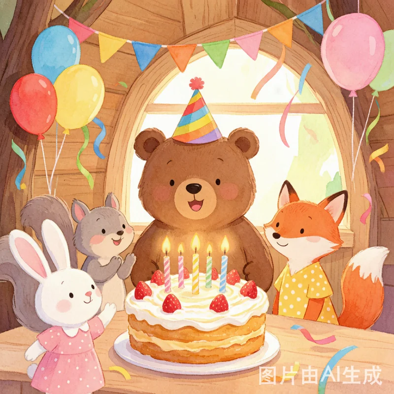
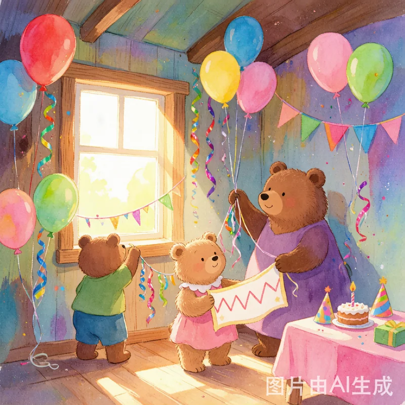
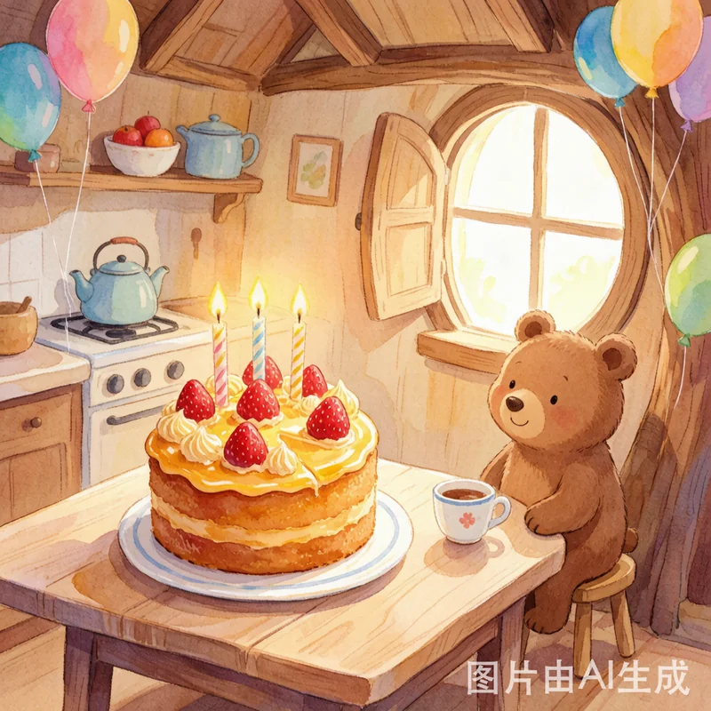
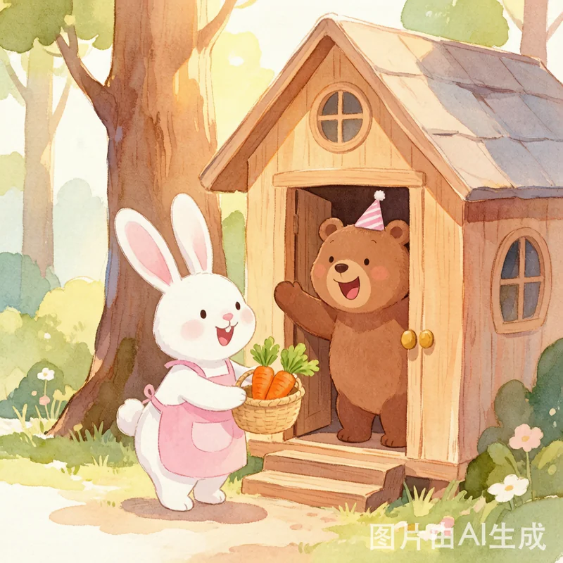
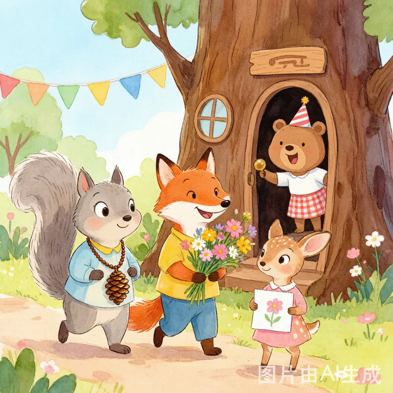
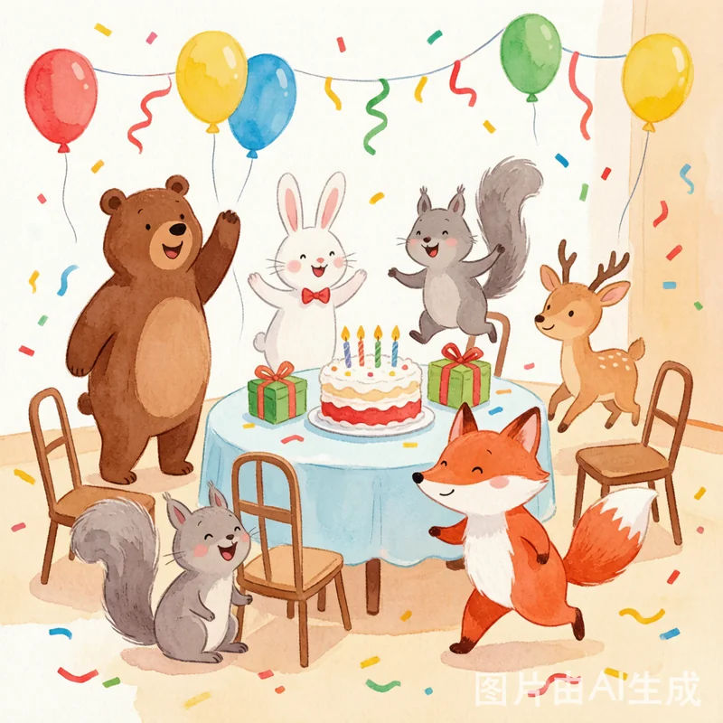
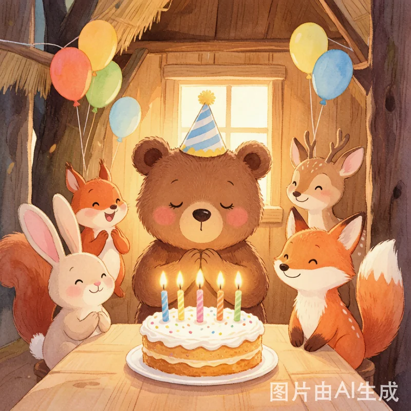
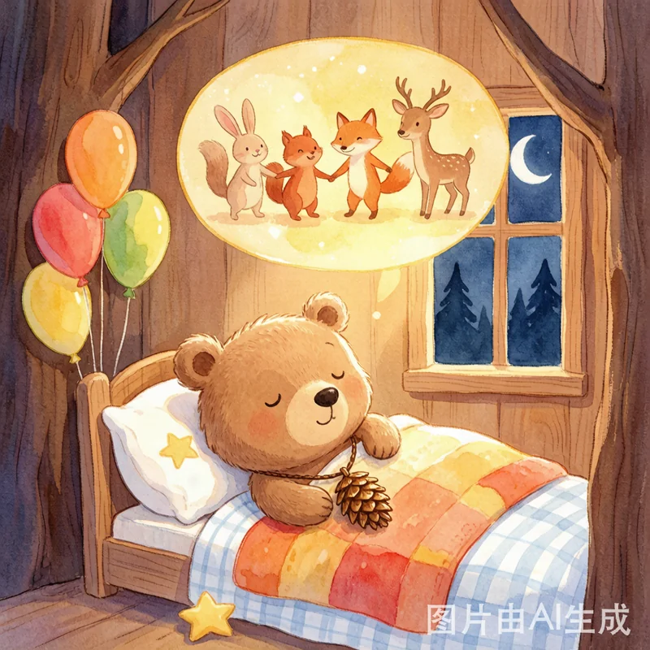

一 场 关 于 友 谊 与 分 享 的 盛 会

春天的一个早晨，阳光透过树叶洒进小熊的树洞小屋。今天是一个特别的日子——小熊满满五岁啦！
"今天是我的生日！"小熊满满从床上跳起来，开心地转了三个圈。
满满和妈妈一起忙碌起来，在墙上挂满了彩色气球和亮闪闪的彩带。满满还亲手画了一张大大的横幅："欢迎来满满的生日派对！"

最让人期待的是那个生日蛋糕。熊妈妈烤了一个圆圆的蜂蜜蛋糕，上面铺满了红红的草莓和金黄的奶油，还插了五根彩色的蜡烛。甜甜的香味飘满了整个房间。
满满坐在门口的小凳子上，两只小脚晃啊晃。"朋友们什么时候来呢？"满满有点着急。
"叮咚——"门铃响了！

满满飞快地跑去开门。门口站着小兔子棉棉，她穿着粉色的小围裙，手里捧着一个小小的篮子。
"满满，生日快乐！"棉棉把篮子递过来，"这是我亲手种的胡萝卜，又甜又脆，送给你！"
"谢谢你，棉棉！"满满接过篮子，胡萝卜上还带着泥土的清香，真新鲜呀。

"叮咚——"小松鼠果果蹦蹦跳跳地跑进来，脖子上挂着一串亮晶晶的松果项链："满满，生日快乐！"
小狐狸暖暖抱着一束野花："这束花是我在山坡上采的，每一朵都是我精心挑的！"
小鹿丫丫举着一幅画："这是我画的我们一起玩的画，送给你当生日礼物！"画上大家手拉手，笑得可开心了。

朋友们都到齐了，派对正式开始！满满和朋友们先玩了"抢椅子"的游戏。音乐一停，所有人都去抢椅子——哈哈，果果没抢到，一屁股坐在了地上，逗得大家哈哈大笑。
然后是"猜谜语"游戏。暖暖出了一个谜语，大家想了半天，满满最聪明，第一个答对了！"答对啦！"大家鼓起掌来。

熊妈妈端出了那个漂亮的蜂蜜蛋糕。五根蜡烛被点燃，火苗一跳一跳的，把每个人的脸都映得暖暖的。
"满满，许个愿吧！"满满闭上眼睛，双手合十，许了一个很小很小、却很温暖很温暖的愿望。
"呼——"满满一口气吹灭了所有蜡烛。熊妈妈把蛋糕分给每一个人，蜂蜜蛋糕甜甜的，草莓酸酸的——"这是我吃过的最好吃的蛋糕！"

吃完蛋糕，满满小心翼翼地拆开每一份礼物，每一样他都看了又看，摸了又摸。
"谢谢你们，"满满声音有点哽咽，"这是我过得最开心的一个生日。不是因为蛋糕，也不是因为礼物，而是因为你们都来了。"
棉棉搂住满满："因为我们是好朋友呀！好朋友就是要一起分享快乐的！"那天晚上，满满做了一个甜甜的梦——梦里，好朋友们永远在一起。